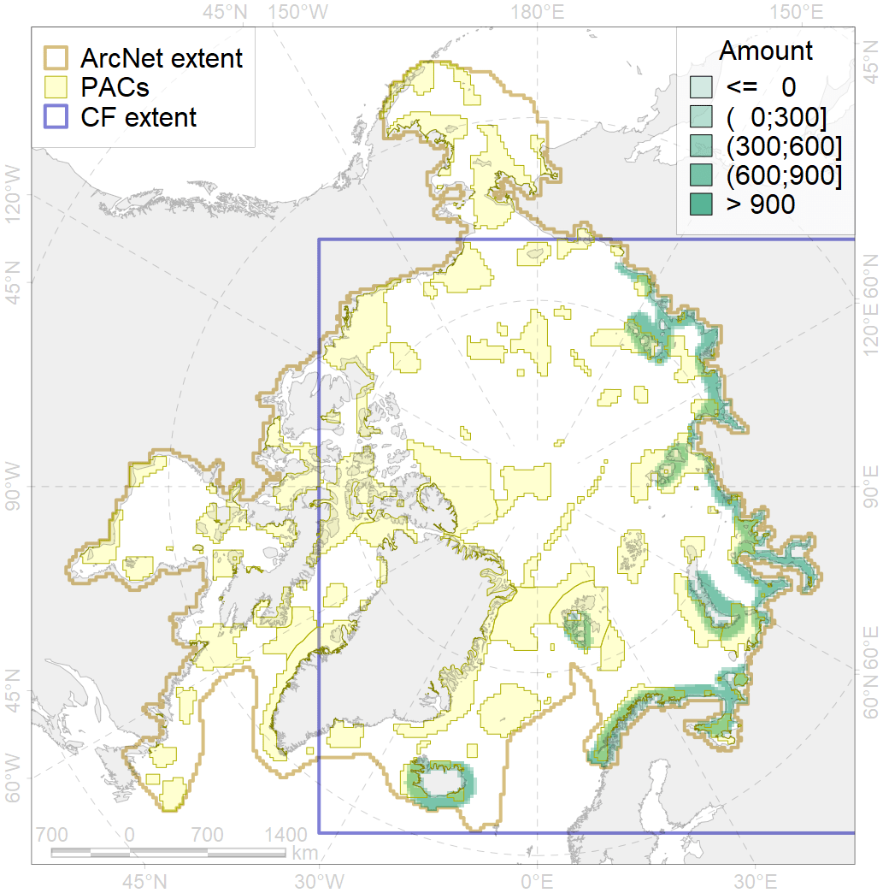
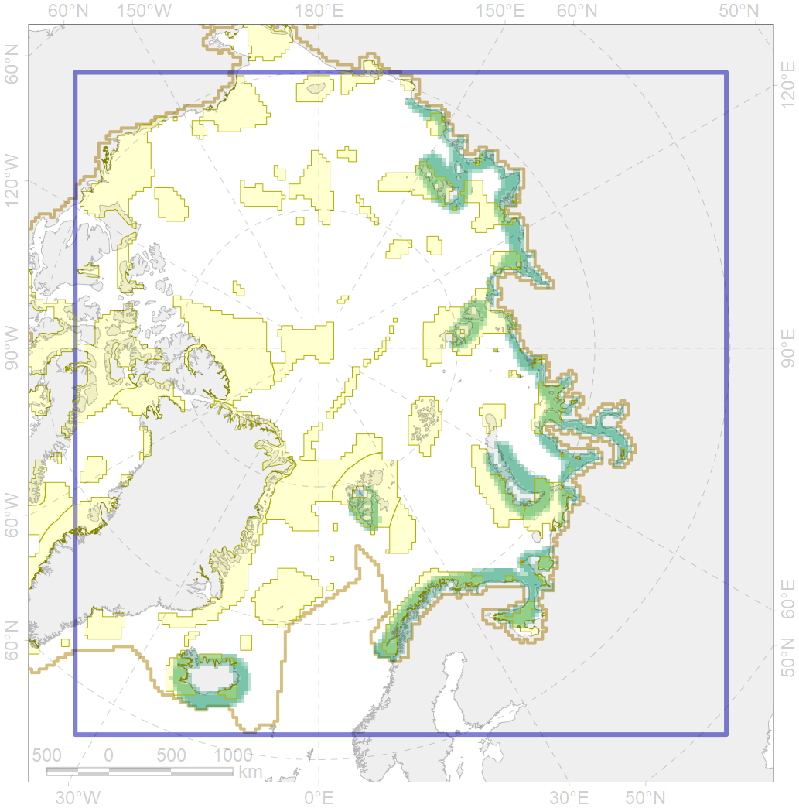

4030

| CF ID | 4030 |
| CF Name | Feeding area of the Arctic charr (Salvelinus alpinus), anadromous populations |
| Time Period | 1930s-2010s |
| Source(s) | Chernova, 2011; Coad , Reist, 2018 |
| Seasonality | January-December |
| Depth Horizon | at sea 0-70 m |
| Methodology | Compiled from literature sources based on field observations |
| Author Name | N. Chernova |
| Notes | |
| Conservation Target Set in the Scenario | 0.384 |
| Conservation Target Achieved in the Scenario | 0.437 (Scenario: 113.8%) |
| PAC ID | Proportion in the PAC | Contribution to ArcNet Target Achievement | PAC’s Contribution to the Achieved Target |
|---|---|---|---|
| 10 | 1.0% | 2.1% | 1.8% |
| 11 | 2.7% | 6.9% | 6.1% |
| 12 | 1.9% | 4.2% | 3.7% |
| 13 | 1.7% | 4.2% | 3.7% |
| 14 | 3.9% | 9.2% | 8.1% |
| 15 | 0.2% | 0.5% | 0.4% |
| 16 | 4.1% | 9.9% | 8.7% |
| 17 | 0.1% | 0.3% | 0.2% |
| 18 | 0.2% | 0.6% | 0.5% |
| 20 | 5.2% | 12.7% | 11.1% |
| 21 | 1.9% | 4.5% | 4.0% |
| 23 | 1.1% | 2.4% | 2.1% |
| 24 | 0.3% | 0.8% | 0.7% |
| 25 | 0.4% | 0.9% | 0.7% |
| 26 | 2.9% | 6.3% | 5.5% |
| 27 | 7.6% | 18.2% | 15.9% |
| 30 | 2.8% | 6.9% | 6.0% |
| 38 | 3.4% | 7.8% | 6.8% |
| 39 | 1.1% | 2.6% | 2.3% |
| 40 | 0.3% | 0.5% | 0.4% |
| 41 | 0.8% | 1.1% | 1.0% |
| inner | 43.8% | 102.5% | 90.0% |
| outer | 55.8% | 11.2% | 9.9% |